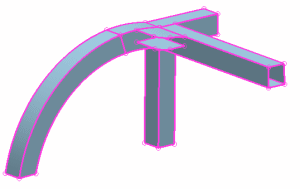
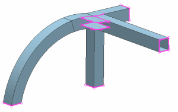

Automatically stitch edges
 Stitch Edge (Home tab→Polygon Geometry group)
Stitch Edge (Home tab→Polygon Geometry group)

The free edges are shown in pink.
-
Method
-
Automatic

-
Geometry to Stitch
Both
The Both option stitches edges to edges, and also stitches edges to faces.
-
 (Select Body)
(Select Body) -
 Drag a selection box around the model.
Drag a selection box around the model.
-
Snap Ends
0.3 mm
-
Apply

The automatic stitching did not stitch the larger gaps. Manual stitching can take care of these edges.